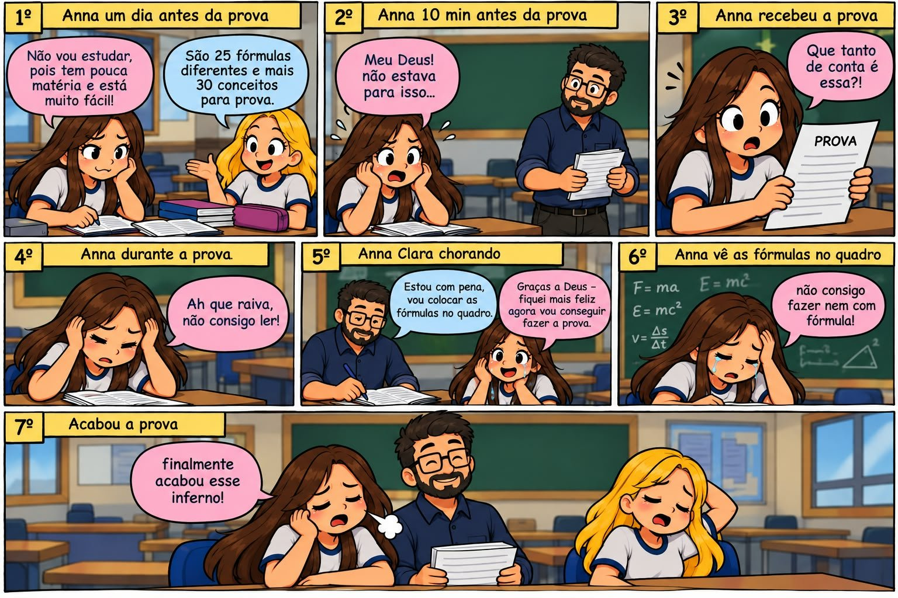

📖 Histórias da Turma
Além dos estudos, o Ensino Médio também é feito de momentos inesquecíveis, risadas e situações que ficam marcadas para sempre na memória. Aqui reunimos as histórias mais engraçadas e especiais vividas pela nossa turma ao longo desses anos — porque aprender também é sobre viver boas experiências!

Tirinha
😱 Anna e a prova que "estava muito fácil"
"Não vou estudar, pois tem pouca matéria!" — famosas últimas palavras. Acompanhe em 7 quadrinhos a saga da Anna desde o dia anterior até o glorioso momento em que a prova finalmente acabou...
Ver tirinha completa
Espaço reservado para vocês adicionarem suas próprias memórias inesquecíveis da turma! ✏️